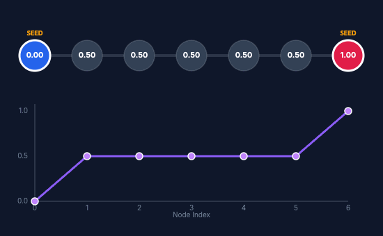
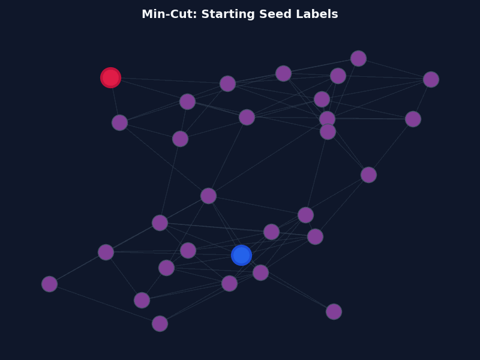
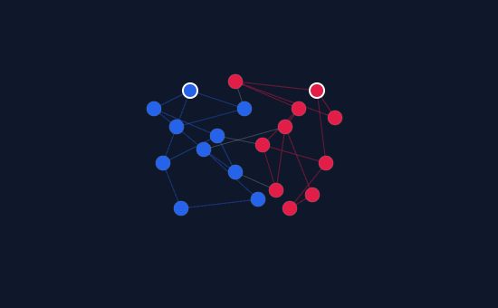
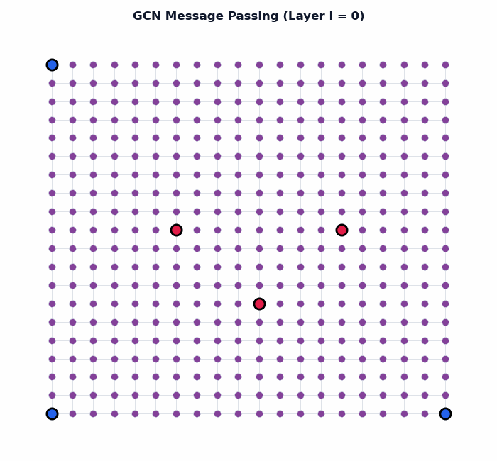
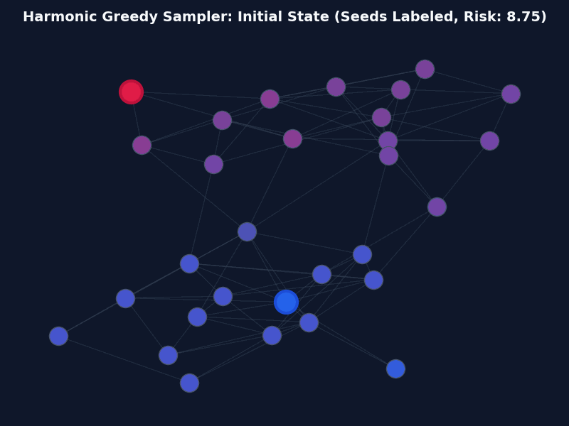
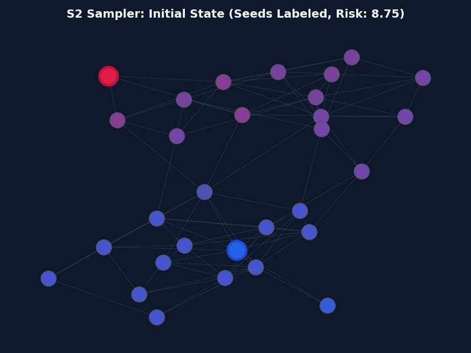
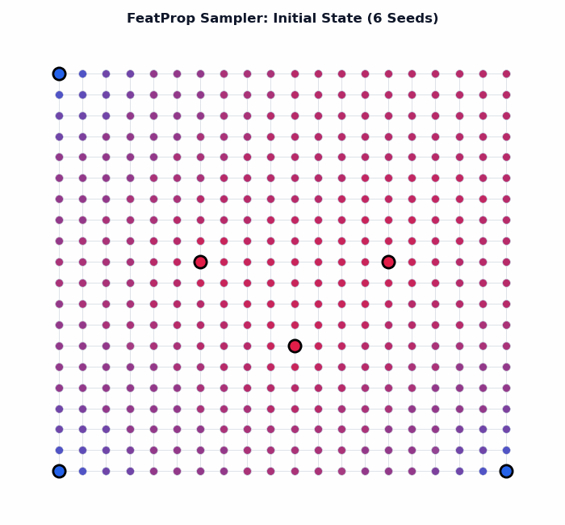
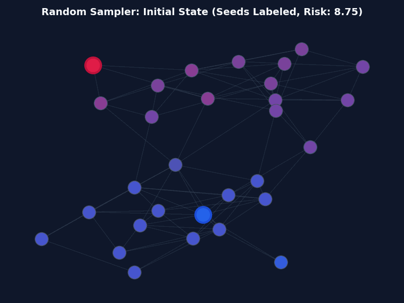
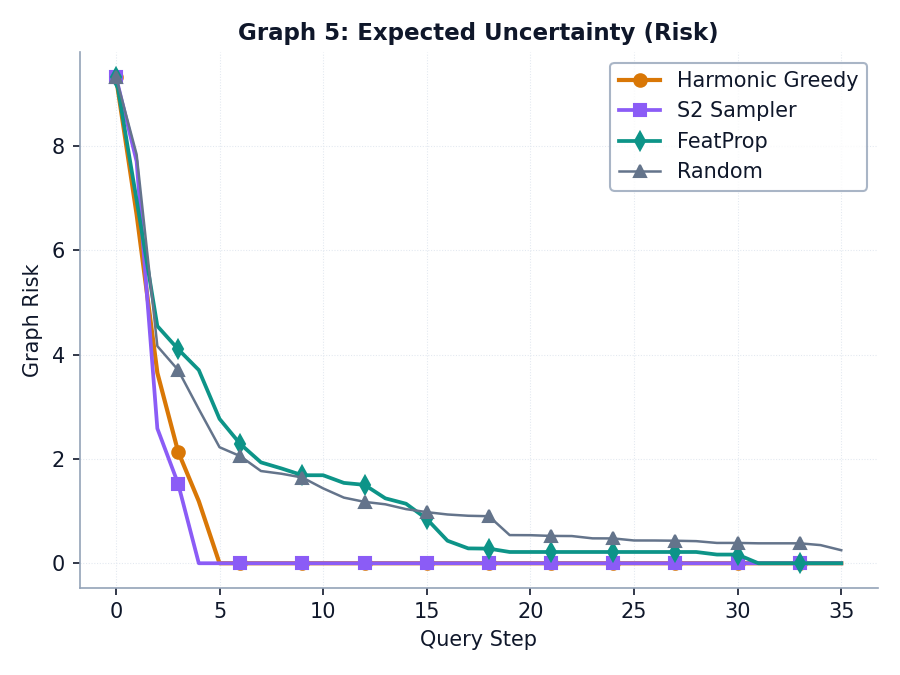
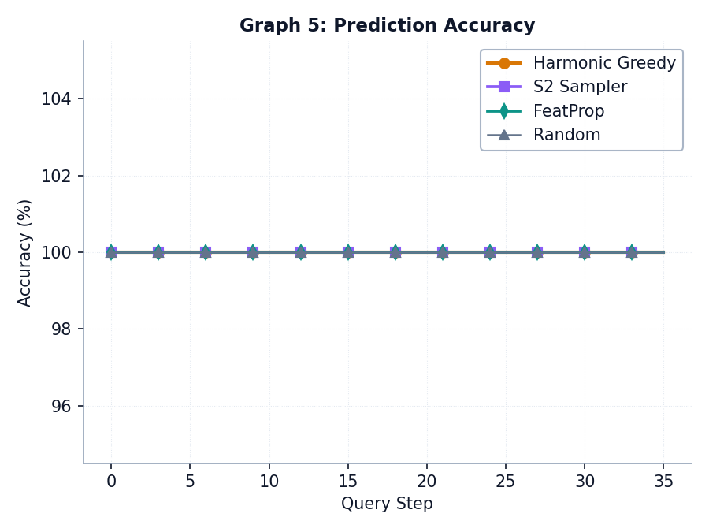

Introduction
GraphALP is a Python package designed for researchers and educators exploring Graph-Based Semi-Supervised Learning and Active Learning on Graphs. In many real-world scenarios, network data is abundant but labeling nodes is highly expensive. GraphALP bridges this gap by offering two main pillars:
- Label Propagators: Semi-supervised models that diffuse labels from seed nodes to unlabeled nodes via graph topology.
- Active Samplers: Algorithms that select the most informative nodes to query next, maximizing accuracy while minimizing annotation costs.
All core implementations are written transparently in Python, relying on NetworkX for graph representations and NumPy/scikit-learn for mathematical solutions.
Installation
GraphALP is currently structured for developer installations. You can install it locally in editable mode:
git clone https://github.com/username/graph-alp.git cd graph-alp pip install -e .
System Requirements: Python 3.8+ is required. The library depends on numpy, networkx, and scikit-learn.
Quickstart Guide
Below is a complete, copy-pasteable example running label propagation and active sampling on a standard graph:
import networkx as nx
from graphalp import HarmonicLabelPropagator, HarmonicGreedySampler
# 1. Initialize a graph
G = nx.karate_club_graph()
# 2. Define initial seed nodes
X_labeled = [0, 33]
y_labeled = [0, 1]
# 3. Predict unlabeled nodes using the Harmonic Propagator
prop = HarmonicLabelPropagator(G)
prop.fit(X_labeled, y_labeled)
unlabeled = [n for n in G.nodes() if n not in X_labeled]
probs = prop.predict_probabilities(unlabeled)
print(f"Initial predicted probability for Node {unlabeled[0]}: {probs[0]:.4f}")
# 4. Use Active Learning to find the next node to label
sampler = HarmonicGreedySampler(G)
sampler.fit(X_labeled, y_labeled)
next_to_query = sampler.sample()
print(f"Optimal node to query next: {next_to_query}")
HarmonicLabelPropagator
The harmonic propagator models label diffusion as a Dirichlet problem on Gaussian Random Fields. Labeled nodes act as fixed boundary conditions (sources/sinks), and unlabeled node probabilities are calculated by solving a system of linear equations derived from the graph Laplacian matrix.
| Parameter | Type | Description |
|---|---|---|
| graph | nx.Graph | The NetworkX graph structure to diffuse labels over. |
Solves the Dirichlet system using the graph Laplacian matrix on current labels.
| Arg | Type | Description |
|---|---|---|
| X | Iterable | Node identifiers for the labeled seed set. |
| y | Iterable | Class labels corresponding to nodes in X (0 or 1). |
Returns the predicted soft probabilities (continuous values in range [0, 1]) for a list of node IDs.
Returns hard binary classifications (0 or 1) by thresholding predicted probabilities at 0.5.

MinCutLabelPropagator
The min-cut propagator approaches semi-supervised learning as a network flow capacity problem. It finds the minimum cut (bottleneck) separating positive seed nodes (connected to source) and negative seed nodes (connected to sink), partition-labeling the nodes accordingly.
Computes the min-cut partition directly on the graph structure with source/sink augmentations.
Returns hard labels based on whether nodes fall into the source-reachable partition (1) or non-reachable partition (0).

SpectralLabelPropagator
The spectral propagator projects nodes into a low-dimensional manifold using the first $k$ eigenvectors of the graph Laplacian matrix. It then trains an SVM classifier with an RBF kernel on these global spectral coordinates to predict unlabeled nodes.
| Parameter | Type | Default | Description |
|---|---|---|---|
| graph | nx.Graph | - | The graph structure to embed. |
| n_components | int | 2 | Number of Laplacian eigenvectors to compute for the embedding space. |
Fits an RBF Support Vector Machine on the pre-computed spectral coordinates of the labeled subset.
Returns SVM predict probability scores for Class 1.

GCNLabelPropagator
The GCN propagator implements localized symmetric normalized convolutions based on Kipf & Welling's Graph Convolutional Networks. It diffuses label indicators through local neighborhoods layer-by-layer without training neural weights.
Performs neighborhood message passing. Dynamically adjusts propagation hops ($L$) based on the seed nodes' shortest paths.

HarmonicGreedySampler
The expected risk minimization (ERM) active sampler. For every candidate unlabeled node, this sampler simulates querying it with both possible labels (0 and 1) and computes the expected graph-wide prediction risk. It queries the node that minimizes this future expected uncertainty.
Fits the underlying Harmonic propagator on current labels.
Evaluates expected risk for all unlabeled nodes and returns the ID of the node achieving the lowest future risk.

S2Sampler
The S2 active sampler (Dasarathy et al., 2015). It bisects boundaries by pruning edges with conflicting labels, finding the shortest path in the resulting graph between Class 0 and Class 1 subgraphs, and querying the middle node along that path.
| Parameter | Type | Default | Description |
|---|---|---|---|
| graph | nx.Graph | - | The graph structure to sample nodes from. |
| fallback_sampler | Sampler | RandomSampler | Sampler used if seeds do not cover both classes or no path connects them. |
Finds the shortest path connecting different label groups and returns the middle node.

FeatPropSampler
The FeatProp sampler (Wu et al., 2019). It diffuses node features (using GCN's normalized adjacency operators) across the graph layout, blending them with neighbors, and then solves a K-Medoids clustering problem to identify key landmark centroids to query.
Selects the node that minimizes the K-Medoids distance objective on the convolved feature space.

RandomSampler
The standard random baseline. It samples nodes uniformly at random from the set of unlabeled nodes. Useful for measuring active learning performance improvements.

Simulation Benchmarks
Quantitative benchmarks are critical to verify active learning benefits. GraphALP includes simulated tests run on multi-community structures (e.g. SBM communities) to trace expected risk reduction and accuracy curves over consecutive query rounds.
Expected Risk Reduction

Prediction Accuracy

Analysis: The plots demonstrate that HarmonicGreedy (Expected Risk Minimizer) and FeatProp sampler (K-Medoids centroid coverage) reduce model uncertainty (Graph Risk) and boost label prediction accuracy significantly faster than the Random query baseline, requiring up to 50% fewer labeled nodes to reach matching accuracy thresholds.